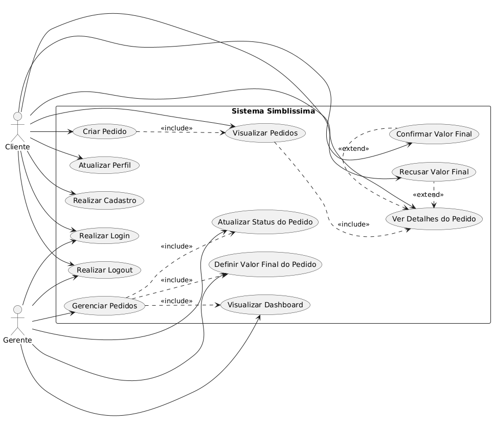

Documento de Arquitetura de Software (DAS)
"Simblissima"
Introdução
Proposta
Este documento apresenta uma visão geral da arquitetura do sistema Simblissima, utilizando diferentes visões arquiteturais para destacar diversos aspectos do sistema. É utilizado para capturar as decisões arquiteturais significativas que fizeram parte do desenvolvimento do sistema, com foco no gerenciamento de pedidos e entregas entre o continente e a Ilha Primeira.
Escopo
A aplicação "Simblissima" tem o objetivo de fornecer uma API REST para o gerenciamento eficiente de pedidos e entregas, visando facilitar a logística de produtos do continente para a Ilha Primeira. Ela inclui funcionalidades para registro e gestão de usuários (clientes e gerentes), criação e acompanhamento de pedidos, e atualização de status e valores, tudo acessível através de uma interface Single Page Application (SPA).
Definições, Acrônimos e Abreviações
- MVT - Model-View-Template: Padrão arquitetural utilizado pelo Django, onde Model representa a estrutura de dados, View lida com a lógica de negócio e Template é responsável pela apresentação.
- SPA - Single Page Application: Aplicação web que carrega uma única página HTML e atualiza o conteúdo dinamicamente conforme a interação do usuário.
- API - Application Programming Interface: Conjunto de regras e protocolos que permite a comunicação entre diferentes softwares.
- REST - Representational State Transfer: Estilo de arquitetura de software para sistemas distribuídos, comumente usado para APIs web.
- SIMBLISSIMA - Nome do Aplicativo
Visão Geral
O Documento de Arquitetura de Software (DAS) trata-se de uma visão geral de toda a arquitetura do sistema Simblissima, observando diferentes aspectos do mesmo. Neste documento serão abordadas as seguintes visões da aplicação Simblissima:
- Caso de Uso;
- Lógica;
- Implantação;
- Implementação;
- Dados;
Representação Arquitetural
Cliente-Servidor
Cliente-Servidor é um modelo de arquitetura onde um cliente (geralmente uma interface de usuário) envia requisições a um servidor, que processa essas requisições e envia as respostas de volta ao cliente. No Simblissima, o frontend (SPA) atua como cliente e o backend (API Django REST Framework) como servidor.
Cliente (Frontend):
- View: Consiste nas interfaces HTML, CSS e JavaScript que rodam no navegador do usuário. Estas interfaces são responsáveis por renderizar os dados e capturar as interações do usuário, enviando requisições à API. Os arquivos
base.htmle os scripts JS emstatic/js/são parte desta camada.
Servidor (Backend):
-
Controller: Em Django REST Framework, os ViewSets e as funções decoradas com
@api_viewemsimblissimaApp/views.pyatuam como controladores. Eles recebem as requisições HTTP do cliente, orquestram a lógica de negócio, interagem com os modelos e serializers, e retornam as respostas HTTP. -
Service (Lógica de Negócio): A lógica de negócio, como a criação de pedidos com status inicial, atualização de valores totais, e validações específicas, está implementada principalmente dentro dos métodos dos ViewSets (
PedidoViewSet,ClienteViewSet, etc.) emsimblissimaApp/views.pye nos serializers (PedidoSerializer). As ações@actionetransaction.atomic()são exemplos de encapsulamento de lógica de serviço. -
Model: Responsável pela persistência e recuperação de dados. No Simblissima, os modelos definidos em
simblissimaApp/models.py(Cliente,Pedido,ItemPedido,StatusPedido) mapeiam diretamente para as tabelas do banco de dados (SQLite por padrão) e encapsulam a lógica de negócios relacionada aos dados.
Objetivos de Arquitetura e Restrições
Objetivos
**Segurança:** - Proteger dados de usuários e pedidos através de autenticação por sessão e permissões baseadas em roles (cliente/staff) no Django REST Framework. - Utilizar CSRF Token para proteção contra ataques cross-site request forgery. **Persistência:** - Garantir a persistência dos dados de clientes, pedidos, itens de pedidos e histórico de status em um banco de dados SQLite. **Privacidade:** - Controlar o acesso a dados sensíveis de clientes e pedidos através das permissões de usuário (IsOwnerOrStaff) e autenticação de sessão. **Desempenho:** - Otimizar as requisições à API e o carregamento da SPA para uma experiência fluida, com filtros e ordenação para pedidos e dashboards. **Reusabilidade:** - Utilizar componentes reutilizáveis no frontend (JavaScript modular) e serializers genéricos no Django REST Framework para facilitar a manutenção e expansão.
Restrições
**Tamanho da tela:** A interface da Single Page Application (SPA) é responsiva e se adapta a diferentes tamanhos de tela (desktop e mobile), embora a experiência ideal seja em telas maiores para o dashboard do gerente. **Portabilidade:** A aplicação é baseada em web e pode ser acessada de qualquer navegador moderno, sem a necessidade de instalação de software específico no lado do cliente. |IE|Edge|Firefox|Chrome|Safari|Googlebot| |--|----|-------|------|------|---------| |11 |>= 14|>= 52|>= 49|>= 10|Sim| **Serviços:** A aplicação é autocontida e não depende inicialmente de serviços externos de terceiros (como APIs de pagamento ou de mapas em tempo real). Todas as funcionalidades de gerenciamento de pedidos são internas. **Acesso a internet:** A aplicação requer conexão com a internet para ser acessada, pois é uma aplicação web.
Ferramentas Utilizadas
- Python: Linguagem de programação principal para o backend.
- Django: Framework web para o desenvolvimento rápido e eficiente do backend.
- Django REST Framework: Toolkit para a construção da API RESTful.
- SQLite: Banco de dados padrão leve, utilizado para o desenvolvimento e persistência de dados.
- HTML, CSS, JavaScript: Linguagens para o desenvolvimento da Single Page Application (SPA) no frontend.
- Bootstrap: Framework CSS para o design responsivo da interface.
- Git/GitHub: Sistema de controle de versão e plataforma para colaboração.
- Visual Studio Code: Ambiente de desenvolvimento integrado (IDE).
- Figma: Ferramenta para prototipagem de alta fidelidade.
Visão de Caso de Uso
A visão de caso de uso descreve as interações dos principais atores com o sistema Simblissima. O diagrama apresenta os casos de uso para o **Cliente** (morador da Ilha Primeira), que pode se registrar, fazer login, criar e acompanhar pedidos, e gerenciar seu perfil; e para o **Gerente** (equipe de logística/administração), que pode fazer login, gerenciar pedidos, atualizar status e visualizar o dashboard.

Visão Lógica
A visão lógica do sistema Simblissima é organizada em módulos funcionais que se comunicam através da API REST. Os principais componentes lógicos incluem:
- **Módulo de Autenticação e Autorização**: Gerencia o registro, login e logout de usuários (clientes e staff), além de controlar o acesso a recursos da API com base nas permissões de usuário.
- **Módulo de Gerenciamento de Clientes**: Lida com a criação e atualização dos dados de clientes, incluindo o vínculo com o modelo `User` do Django.
- **Módulo de Gerenciamento de Pedidos**: Centraliza a criação, recuperação, atualização e exclusão de pedidos, incluindo a associação de itens e o cálculo do valor total.
- **Módulo de Rastreamento de Status**: Gerencia o ciclo de vida do pedido através de diferentes status, registrando o histórico de mudanças e comentários. Permite que gerentes atualizem o status e definam valores finais, e clientes acompanhem essas mudanças.
- **Módulo de Relatórios/Dashboard**: Fornece funcionalidades para que a equipe de gestão visualize estatísticas e listas de pedidos filtradas, auxiliando na tomada de decisões.
Visão de Implantação
O sistema Simblissima será implantado como uma aplicação web Django com as seguintes características de implantação:
- **Servidor Web**: Aplicação Django servindo tanto a API REST quanto os arquivos estáticos da SPA
- **Banco de Dados**: SQLite para desenvolvimento, podendo ser migrado para PostgreSQL ou MySQL em produção
- **Frontend**: Single Page Application (SPA) servida como arquivos estáticos
- **Acesso do Cliente**: Navegadores web acessando o sistema através de HTTP/HTTPS
Visão de Implementação
Visão Geral
A visão de implementação do Simblissima detalha a estrutura do código-fonte e os componentes principais. O projeto é organizado em uma aplicação Django (`simblissimaApp`) que contém os modelos de dados, serializadores, views da API e a lógica de negócio. O frontend é uma Single Page Application (SPA) construída com HTML, CSS e JavaScript, que interage com a API REST.
Principais Componentes:
- models.py: Define as entidades do sistema (Cliente, Pedido, ItemPedido, StatusPedido)
- serializers.py: Serialização dos dados para a API REST
- views.py: ViewSets e endpoints da API
- static/js/: Scripts JavaScript da SPA
- templates/: Templates HTML base
- static/css/: Estilos CSS e Bootstrap
Visão de Dados
Modelo Entidade Relacionamento (MER)
O Modelo Entidade Relacionamento (MER) do Simblissima descreve as entidades do sistema e como elas se relacionam para armazenar as informações de clientes, pedidos e seus status.
Entidades e Relacionamentos:
- User: Representa o usuário do sistema (do Django Auth), contendo informações básicas de autenticação como username (CPF), email, first_name e last_name.
- Cliente: Estende o
Usercom informações específicas do cliente, como CPF (único), endereço e telefone. Possui um relacionamentoOneToOneFieldcomUser. - Pedido: Representa um pedido feito por um cliente. Contém informações como cliente (
ForeignKeypara Cliente), data de criação, status (Pendente, Confirmado, etc.), valor total (dos itens), valor final (definido pelo gerente), método de pagamento e observações. - ItemPedido: Representa um item individual dentro de um pedido. Possui uma
ForeignKeyparaPedidoe contém a descrição do item e seu preço. - StatusPedido: Registra o histórico de status de um pedido. Possui uma
ForeignKeyparaPedidoe registra o status, a data da mudança e um comentário.
Diagrama Entidade Relacionamento (DER)
O Diagrama Entidade Relacionamento (DER) a seguir ilustra visualmente as entidades e os relacionamentos descritos no MER, mostrando a estrutura do banco de dados do Simblissima.
Relacionamentos principais:
- User (1:1) Cliente: Cada cliente está associado a um usuário Django
- Cliente (1:N) Pedido: Um cliente pode ter múltiplos pedidos
- Pedido (1:N) ItemPedido: Um pedido pode conter múltiplos itens
- Pedido (1:N) StatusPedido: Um pedido mantém histórico de status
Tamanho e Desempenho
O sistema Simblissima foi projetado para ser leve e eficiente, utilizando o Django REST Framework para otimização de requisições e respostas da API. A paginação (page_size: 10) está configurada para limitar o número de itens retornados por requisição, melhorando o desempenho para grandes volumes de dados. A atualização automática das listas de pedidos (a cada 30 segundos para a lista geral e 15 segundos para detalhes) visa manter as informações atualizadas para clientes e gerentes, sem sobrecarregar o servidor. O uso de SQLite em desenvolvimento oferece flexibilidade e facilidade de setup, podendo ser escalado para bancos de dados mais robustos em produção.
Qualidade
A qualidade do sistema Simblissima é assegurada através de:
- **Validação de Dados**: Implementada nos serializers e modelos para garantir a integridade e consistência dos dados de entrada (ex: CPF de 11 dígitos, preços positivos).
- **Tratamento de Erros**: Respostas de erro padronizadas da API com códigos HTTP apropriados e mensagens informativas para o cliente.
- **Segurança**: Autenticação de sessão e permissões (`IsOwnerOrStaff`) para garantir que apenas usuários autorizados acessem ou modifiquem recursos específicos.
- **Usabilidade**: Design responsivo da SPA com Bootstrap e feedback visual para as ações do usuário (mensagens de sucesso/erro).
- **Consistência de Dados**: Uso de transações atômicas para garantir que operações complexas (ex: criação de pedido com status inicial) sejam concluídas integralmente ou desfeitas.
Referências Bibliográficas
Documento de Arquitetura de Software: Disponível em: https://www.devmedia.com.br/documento-de-arquitetura-de-software-das/37279. Acesso em: 02 de junho de 2025. https://www.reddit.com/r/NoStupidQuestions/comments/hgkc5g/whats_a_gender_neutral_alternative_to_dear/?tl=pt-br Padrão Cliente-Servidor: Disponível em: https://www.alura.com.br/artigos/o-que-e-cliente-servidor. Acesso em: 02 de junho de 2025. https://www.reddit.com/r/NoStupidQuestions/comments/hgkc5g/whats_a_gender_neutral_alternative_to_dear/?tl=pt-br Django REST Framework: Disponível em: https://www.django-rest-framework.org/. Acesso em: 02 de junho de 2025. SQLite: Disponível em: https://www.sqlite.org/index.html. Acesso em: 02 de junho de 2025.
Histórico de Versão
| Data | Versão | Descrição | Autor(es) |
|---|---|---|---|
| 08/11/2020 | 1.0 | Criada estrutura básica do documento | xxx xxx, xxx xx, xxx xx, xxx xxx e xxx xxxx |
| 02/06/2025 | 1.1 | Atualização completa do documento para refletir o projeto Simblissima, incluindo todas as seções e imagens. | Bernardo Lobo, Bernardo Moreira, Guilherme Dias, Julia Curto e Michel de Melo |